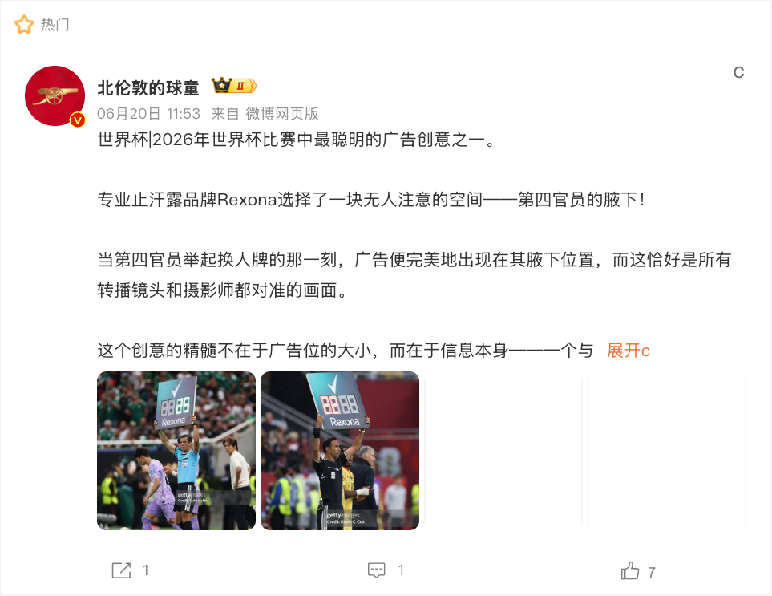
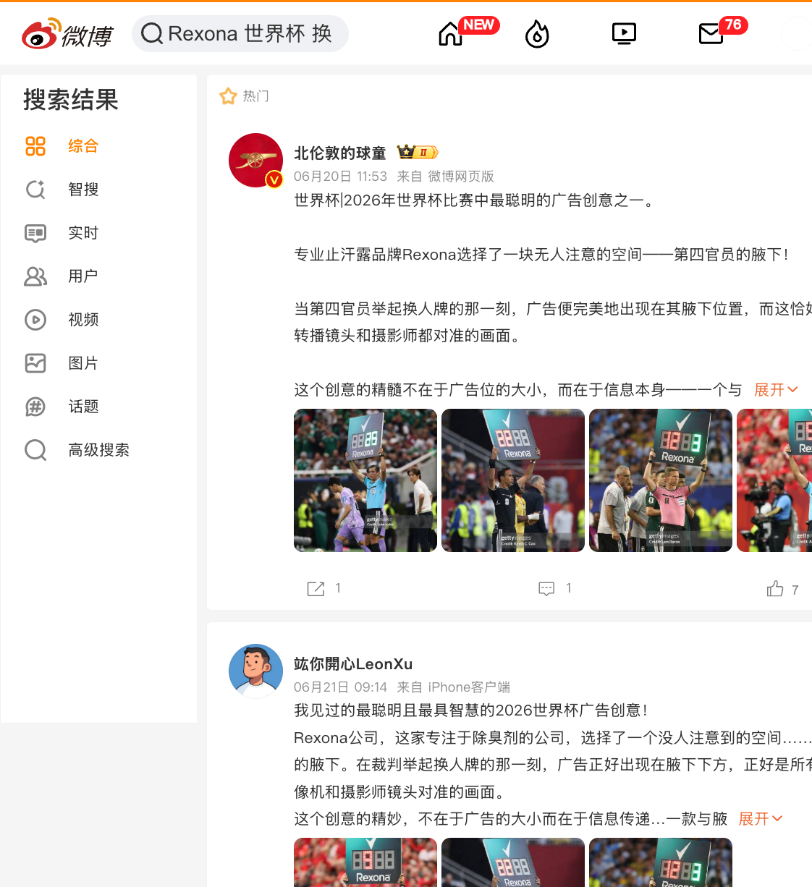

案例发生了什么


谁参与Rexona
发生节点 / 场景全球官方与产品化；规则镜头创意
传播形式品牌内容与对应的用户行动
传播核心寻找所有转播必经的稳定媒介位
Rexona 把换人牌这一所有转播观众都会看见的规则镜头改造成品牌创意，使产品与赛事结构在同一秒成立。
现有资料可确认，这项动作由Rexona发起，发生在全球官方与产品化；规则镜头创意，主要通过品牌内容与对应的用户行动抵达受众。执行过程可以连成一条完整路径：先识别每场比赛必经的稳定转播镜头；随后让品牌信息与镜头原有含义自然重合；最后单一高识别符号降低理解成本。这些动作共同服务于“寻找所有转播必经的稳定媒介位”，让页面能够区分参与主体、传播载体、用户接触点和品牌最终想留下的认知。
动作顺序：识别每场比赛必经的稳定转播镜头；让品牌信息与镜头原有含义自然重合；以单一高识别符号降低理解成本。
当前资料边界：已归档；有图。页面只把已经记录的参与路径和动作写成事实，未取得一手材料的执行细节、投放规模与效果不作推定。
MARKETING KNOWLEDGE ROUTER · 营销知识路由器
营销启发卡
用三张卡片保留最值得记住、讨论和迁移的部分。 卡片底部按主题连接全站相关案例、经典方法与深度文章。
01核心动作
识别每场比赛必经的稳定转播镜头
识别每场比赛必经的稳定转播镜头；让品牌信息与镜头原有含义自然重合。
02传播与商业机制
寻找所有转播必经的稳定媒介位
以“规则镜头创意”为资源起点，进入官方赛事资产、品牌内容、产品/服务、零售或会员触点；结果优先观察权益可见度、用户参与、产品/服务使用与商业转化的分层变化，不把曝光直接等同于销售。
03可复用的方法
优秀的赛事创意常来自对比赛规则和转播语言的细读
优秀的赛事创意常来自对比赛规则和转播语言的细读。
适用条件、风险与证据
- 需要明确权益能被调用的范围，而不是只记录赞助级别。
- 至少准备内容与商业两条承接线，防止资源只在比赛画面里出现。
- 复盘时区分赛事可见度、用户参与和实际业务结果，不能相互替代。
核验记录可将已核动作作为内部判断基础；涉及投放规模、销售结果或合作细则时，仍应以品牌、平台或权利方的一手发布为准。 当前记录：已归档；素材状态：有图。
资料与来源
资料状态与补证方向
当前资料基础
将全球赛事权益翻译为产品、体验与市场增长。 页面已记录参与路径、动作机制、证据状态与素材状态。
优先补证
已归档素材状态为“有图”，下一步应继续补发布日期、投放场景和可归因效果。
结果口径
尚未归档可独立验证的效果数据时，不以曝光推断销售，也不把平台整体数据归因到单一品牌。